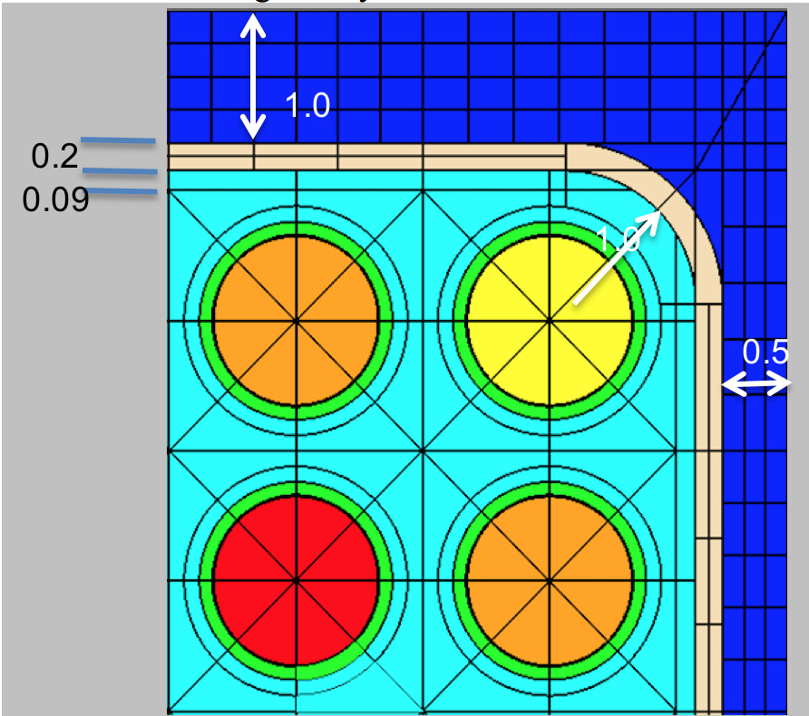

SCALE 6.2 Polaris Input Format¶
For the release of SCALE 6.2.3, several new input cards were implemented into Polaris to model boiling water reactor (BWR) geometries and neutron/gamma detectors, which requires a gamma transport calculation. Moreover, improvements to existing input cards were implemented, along with the ability to specify time-dependent state properties and the ability to specify one or more depletion histories. This appendix documents the SCALE 6.2 input cards that were included in the Polaris input format which are accessible as part of the release of SCALE 6.3.
The old input cards are not available by default with SCALE 6.3, and should be considered deprecated. To maximize backwards compatibility for input files developed with the original SCALE 6.2.0 release, the old input options are available if the input file begins with =polaris_6.2.
The following input cards were introduced in SCALE 6.3 and are not available by default in SCALE 6.2:
cross – define the interior water cross geometry of SVEA assembly designs;
dxmap (or dymap) – define displacement maps that indicate that translation of the pin center in the x- (or y-) direction;
control <BLADE> - define the control blade geometry;
mesh – define advanced spatial meshing options for different materials; and
option <GEOM> – define geometry tolerances, advance meshing options, and plotting options.
option <GAMMA> – gamma transport calculation
detector – insert a detector geometry
history – time dependent history
bui [ti] – initiate calculation with cumulative burnups [time] (with restart)
property<GRAIN> – used to model stochastic media
state – the generalized state input is preceded by the state<MNAME>, state<INAME>, state<GNAME> variants
box – channel box¶
box [thick=*Real*] [rad=*Real*] [icdist=*Real*] [xrad=*Real*] [xlen=*Real*] [Mbox=MNAME]
param |
type |
name |
details |
default |
thick |
Real |
nominal thickness (cm) |
must be >0 |
none |
rad |
Real |
inner corner radius (cm) |
must be >0, additional constraints listed below |
none |
icdist |
Real |
in-channel distance (cm) |
must be >0 |
none |
xrad |
Real |
extra corner thickness (cm) |
must be >= 0 |
0 |
xlen |
Real |
extra corner length (cm) |
excludes rounded corner length |
0 |
Mbox |
MNAME |
box material |
* |
*By default, box material will be set to CAN.1 by “system BWR.” Otherwise box material is required.
% GE 7x7 assembly with 1.88 cm pin pitch
% 0.48 cm narrow gap
% 0.95 cm wide gap
system BWR
geom ge7x7 : ASSM 7 1.88
hgap 0.48 0.95
% Box geometry
% 0.2 thickness
% 0.97 inner corner radius
% 0.14 in-channel distance
box 0.2 0.97 0.14
% Same example, all variables
box 0.2 0.97 0.14 0 0 CAN.1
Comments:
The box specifies the channel box geometry and material that surround the array of fuel pins.
{kind=link}
See also:
hgap

Fig. 26 Box geometry example (uniform thickness).¶
{kind=link}
pin – pin or pincell¶
pin – pin or pincell¶
{kind=link}
*If not specified, the material class MCLASS is taken from the channel card (Mchan) and set to the first member of that class, “Mchan.1.” For example if Mchan=“COOL,” then Mout= “COOL.1.”
Examples:
%standard fuel pin
pin 1 : 0.4096 0.418 0.475
: FUEL GAS CLAD
%empty guide tube
pin E : 0.561 0.602
: COOL.1 CLAD.1
%pyrex
pin P : 0.214 0.231 0.241 0.427 0.437 0.484 0.561 0.602
: GAS TUBE GAS BP.3 GAS TUBE COOL CLAD
%standard fuel pin with explicit material in the outermost region
pin 1 : 0.4096 0.418 0.475
: FUEL GAS CLAD COOL.6
%standard fuel pin with explicit ring and sector mesh
pin 1 : 0.4096 0.418 0.475
: FUEL GAS CLAD
: 5 1 1 0 %5 rings in fuel
: 8 1 1 1 %8 sectors only in fuel
%large central 2x2 water rod in 4x4 assembly
pin W size=2 : 0.8
: COOL
%pinmap must show adjacent Ws
pinmap
F F F F
F W W F
F W W F
F F F F
Comments:
The pin card is one of the basic building blocks of the assembly model. It is the only geometry component which allows an integer (Int) identifier as well as a Word—all other geometric identifiers use Word. Note that the materials are required, except for the last Mout, which can be used to overwrite the material given by a channel for the outermost region in the pincell. The various pin cell meshing options are displayed in Fig. 28. Note that extra rings in the radial zones create equal area regions, whereas rings in the outermost region create equal distance divisions between the last radius and the pincell boundary. Extra sectors create additional azimuthal divisions. A negative value of sectors is allowed and can be used to rotate the sector mesh by a half angle, e.g., ns=4 looks like ⊕ and ns=-4 looks like ⊗.
The total number of cells used in the transport calculation is determined from both the number of rings and the number of sectors. With the MoC transport solver, the fidelity of the solution is also dictated by the number of azimuthal and polar angles and ray spacing. These parameters are changed on the option<KEFF> card.
Due to self-shielding and depletion, each cell could be modeled as a unique material with its own cross section data. However, this is prohibitively memory intensive and typically not necessary. The shield card provides the mechanism to control the additional self-shielded materials introduced.
See also:
pinmap, control, insert, channel, system, option<KEFF>, shield
{kind=link}
bu – initiate calculation with cumulative burnups¶
bu [units=*GWD/MTIHM*|MWD/MTIHM] : [b1 b2 … bi … bN]
param |
Type |
name |
details |
default |
units |
GWD/MTIHM| MWD/MTIHM |
burnup units |
GWD/MTIHM |
|
bi |
Real |
list of absolute burnups |
0 |
Examples:
% simple depletion case with constant power and absolute/cumulative burnups
power 40
bu 0 5 10 15 20 30 40 50 60 80
% using MWd/MTIHM units with variable power
% 40 W/gIHM for 05000 MWD/MTIHM, then 30 W/gIHM for 500010000 MWD/MTIHM
power 40 30
bu MWD/MTIHM: 0 5000 10000
% combine burn/time cards
% 20 W/gIHM for 05 then 510 GWD/MTIHM steps, then
% 40 W/gIHM for a 5-day step then 30 W/gIHM for a 5-day step
power 20
bu GWD/MTIHM : 5 10 GWD/MTIHM
power 40 30
dt DAYS : 5 5
Comments:
The bu card initiates a calculation for a given sequence of cumulative burnups. A burnup or time card usually follows a power card, the two effectively specifying the power history. If multiple burnups are given, then the power card must have either a single power or a list of powers the same size as the list times. A value of 0 is implicit at the beginning of the first burnup list. Multiple burnup/time cards may be specified in an input. This can be convenient for switching units or changing from burnup-based to time-based depletion. Internal automatic substeps are always in effect unless modified with the option<DEPL> card.
See also:
t, dt, dbu, power, option<DEPL>, branch, deplete
dbu – initiate calculation with incremental burnups¶
dbu [units=*GWD/MTIHM*|MWD/MTIHM] : [b1 b2 … bi … bN]
param |
Type |
name |
details |
default |
units |
GWD/MTIHM| MWD/MTIHM |
burnup units |
GWD/MTIHM |
|
bi |
Real |
list of incremental burnups |
0 |
Examples:
% incremental burnups equivalent to
% power 40
% bu 0 5 10 15 20 30 40 50 60 80
power 40
dbu 5 5 5 5 10 10 10 10 20
Comments:
The dbu card initiates a calculation for a given sequence of incremental burnups. Otherwise, it is identical to the bu card for specifying cumulative burnups.
See also:
t, dt, bu, power, option<DEPL>, branch, deplete
t – initiate calculation by cumulative time¶
t [units=*SECONDS*|MINUTES|HOURS|DAYS|YEARS] : [t1 t2 … ti … tN]
param |
Type |
name |
details |
default |
units |
SECONDS|MINUTE S| HOURS| DAYS|YEARS |
time units |
DAYS |
|
ti |
Real |
list of times |
0 |
0 |
Examples:
% burn with 40 W/gIHM for 300 days in 100-day increments
power 40
t 100 200 300
% simulate 2 cycles of time-dependent irradiation with shutdown cooling
% note that time defaults to DAYs
%
% cycle 1
power 40 30 30 30
t 100 200 300 400
power 0
t 415
%
% cycle 2
power 30 20 20 20
t 515 615 715 815
power 0
t 830
Comments:
The t card initiates a calculation for a given sequence of cumulative/absolute times. One of the time cards (t, dt, or ti) is required to model periods of decay in conjunction with power 0. Otherwise, the time card t is similar in functionality to the burnup bu card but with different units.
See also:
dt, bu, dbu, power, option<DEPL>, branch, deplete
dt – initiate calculation by incremental time¶
dt [units=*SECONDS*|MINUTES|HOURS|DAYS|YEARS] : [t1 t2 … ti … tN]
param |
Type |
name |
details |
default |
units |
SECONDS|MINUTE S| HOURS| DAYS|YEARS |
time units |
DAYS |
|
ti |
Real |
list of times |
0 |
0 |
Examples:
% burn with 40 W/gIHM for 300 days in 100-day increments equivalent to
% power 40
% t 100 200 300
power 40
dt 100 100 100
% decay for 30 minutes
power 0
dt 30 MINUTES
Comments:
The dt card is identical to the cumulative time card t except that the values given are incremental.
See also:
t, bu, dbu, power, option<DEPL>, branch, deplete
option<ESSM> – embedded self-shielding¶
{kind=link}
Examples:
% change within group solver to use source iterations
opt ESSM WithinGroupSolver=SOURCE
option<FG> – few-group cross section generation¶
param |
type |
details |
default |
|---|---|---|---|
AdjointMode |
String |
type of adjoint calculation to use in few-group data generation “INFMED”: infinite medium adjoint “CRITICAL”: critical spectrum adjoint “UNIFORM”: uniform adjoint |
“INFMED” |
InvVelMode |
String |
weighting option for few-group inverse velocities “FORWARD”: forward flux weighting “ADJOINT”: adjoint flux weighting |
“FORWARD” |
bi |
Real |
list of burnups to include in output few-group cross section database, e.g., XFile16 output units: GWd/MTHM |
all burnups available |
Ei |
Real |
note descending order and only N-1 divisions are needed for an N group structure E0 is maximum energy (typically 2e7 eV) EN is minimum (typically 1e-5 eV) units: eV |
0.625 eV division (two groups) |
Examples:
% enable the critical spectrum adjoint
opt FG AdjointMode="CRITICAL"
%only include 0,10,15,20 GWd/MTHM burnups in few-group outputs, including XFile16
opt FG : 0 10 15 20
%redefine group energy divisions for 3 groups with divisions at 10 and 0.625 eV
opt FG : : 10 0.625
state<MNAME> – material state¶
param |
type |
name |
details |
default |
MNAME|MCLASS |
material name or material class |
use ALL for all materials |
||
pi |
PNAME |
property name |
||
vali |
Value |
property value |
Examples:
% reset to hot zero power conditions
state ALL : temp=565
state COOL : dens=0.75
% set channel/bypass materials to different ppm boron
state COOL : boron=0
state BYP : boron=600
% set all materials with a boron property
state ALL : boron=300
Comments:
The state card declares the base state for materials and the base state of possible control elements or insert elements.
See also: material, deplete, system
state<INAME> – insert/control state¶
state INAME : in=Bool
param |
type |
name |
details |
default |
INAME |
insert name or control element name |
|||
in |
Bool |
insertion |
“in=” is required |
Examples:
% insert bank D control rods
state BankD : in=true
% remove inserts named Ins6A
state Ins6A false
% perform reflector calculation
state ReflectorNode : in=true
Comments:
This form of the state card is required to insert any control element or inserts. By default, inserts and control elements are out when defined.
See also:
material, deplete, system
state<GNAME> – geometry state¶
state GNAME : pres=Bool
param |
type |
name |
details |
default |
GNAME |
geometry name |
|||
pres |
Bool |
present |
“pres=” is required |
Examples:
% disable reflector calculation even though
% reflector geometry is present
state ReflectorNode : pres=false
Comments:
The geometry version of the state card is used to declare which geometric elements are present in the system. The geometry version of the add card is useful for performing branch calculations for reflector nodes. Note that an assembly geometry must be present to perform a calculation.
See also:
geometry<REFL>, state<MNAME>, state<INAME>